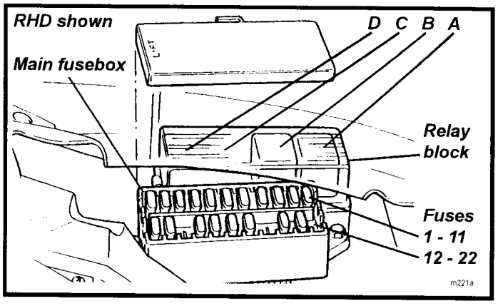
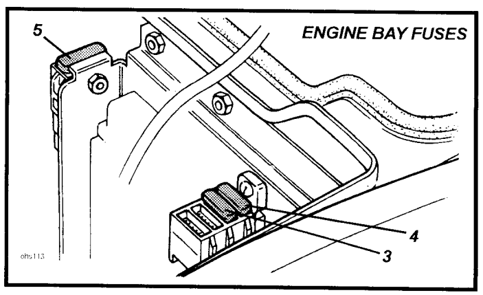
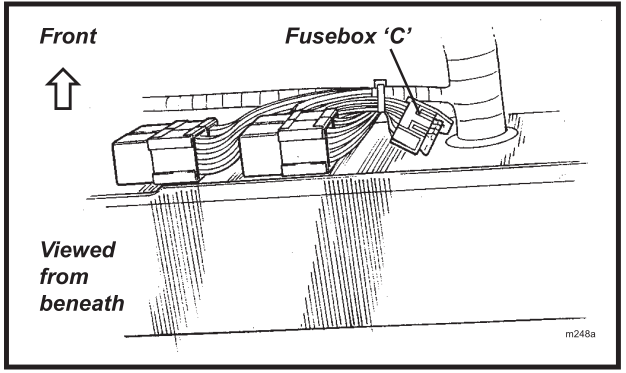
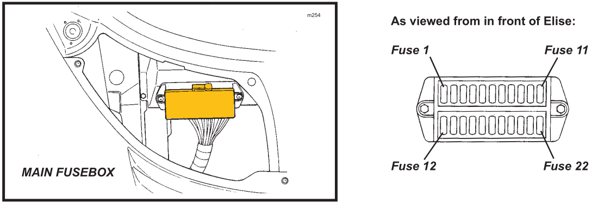
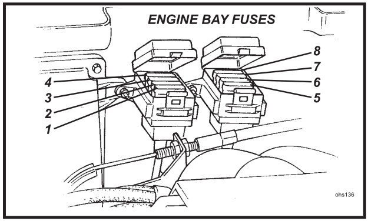

Fusibles
Elise S2 (Rover)

Figura: Caja principal de fusibles| Slot | Color | Valor | Circuito |
|---|---|---|---|
| 1 | Amarillo | 20 | Toma de alimentación auxiliar |
| 2 | Gris | 2 | Sirena de la alarma |
| 3 | Amarillo | 20 | Ventilador interior |
| 4 | Azul | 15 | Motor del limpiaparabrisas |
| 5 | Marrón | 7.5 | Luz de freno |
| 6 | Marrón | 7.5 | Intermitentes |
| 7 | Rojo | 10 | Servicios de encendido |
| 8 | Marrón | 7.5 | Servicios de batería |
| 9 | Rojo | 10 | Luces de emergencia |
| 10 | Marrón | 7.5 | Claxon |
| 11 | Rojo | 10 | Alimentación alarma; luz interior |
| 12 | Blanco | 25 | Ventilador de refrigeración |
| 13 | Marrón | 7.5 | Encendido del sistema de audio |
| 15 | Marrón | 7.5 | Audio +ve; módulo de interruptores |
| 16 | Rojo | 10 | Luces de posición; antiniebla trasero |
| 17 | Rojo | 10 | Luz de cruce izquierda (Dip beam LH) |
| 18 | Rojo | 10 | Luz de cruce derecha (Dip beam RH) |
| 20 | Azul | 15 | Luz larga izquierda (Main beam LH) |
| 21 | Azul | 15 | Luz larga derecha (Main beam RH) |
| A | Relé del claxon | ||
| B | Relé ventilador de refrigeración |

Figura: Caja principal de fusibles| Slot | Color | Valor | Circuito |
|---|---|---|---|
| 3 | Amarillo | 20 | Inmovilizador |
| 4 | Amarillo | 20 | Bomba de combustible |
| 5 | Negro | 80 | Alternador |
Elise S2 (Toyota)

Figura: Fusibles interiores
| Fusible | Color | Valor | Circuito |
|---|---|---|---|
| C1 | Amarillo | 20 | Ventilador interior |
| C2 | Azul | 15 | Motor del limpiaparabrisas |
| C3 | Marrón | 7.5 | Entrada de audio (“key-in”) |
| C4 | Rojo | 10 | Compresor del AC |

Figura: Caja principal de fusibles| # | Color | Valor | Descripción |
|---|---|---|---|
| 1 | Amarillo | 20 | Toma de alimentación auxiliar |
| 2 | Gris | 2 | Sirena de la alarma |
| 3 | Amarillo | 20 | Ventanilla del conductor |
| 4 | Amarillo | 20 | Ventanilla del pasajero |
| 5 | Marrón | 7.5 | Luz de freno |
| 6 | Marrón | 7.5 | Intermitentes |
| 7 | Rojo | 10 | Arranque |
| 8 | Marrón | 7.5 | Batería |
| 9 | Rojo | 10 | Luces de emergencia |
| 10 | Marrón | 7.5 | Claxon |
| 11 | Rojo | 10 | Alimentación alarma, luz interior |
| 12 | Rojo | 10 | ABS |
| 13 | Violeta | 3 | Encendido ECU |
| 14 | Amarillo | 20 | Ventiladores radiador; 1 y 2 lento, 1 rápido |
| 15 | Marrón | 7.5 | Radio, interruptor |
| 16 | Rojo | 10 | Luces de posición / No USA: Antiniebla trasero |
| 17 | Rojo | 10 | Luz de cruce izquierda (Dip beam LH) |
| 18 | Rojo | 10 | Luz de cruce derecha (Dip beam RH) |
| 19 | Amarillo | 20 | Relé compresor A/C, ventilador radiador 2 rápido |
| 20 | Azul | 15 | Luz larga izquierda (Main beam LH) |
| 21 | Azul | 15 | Luz larga derecha (Main beam RH) |
| 22 | Marrón | 7.5 | Cierre centralizado (CDL) |

Figura: Fusibles compartimiento del motor| Fusible | Color | Valor | Circuito |
|---|---|---|---|
| R1 | Amarillo | 20 | Bomba de combustible |
| R2 | Violeta | 3 | Inmovilizador |
| R3 | Marrón | 5 | Señal del alternador |
| R4 | Marrón | 5 | Alimentación de batería de la ECU |
| R5 | Marrón | 5 | Calentadores de O₂ |
| R6 | Marrón | 7.5 | VSV de VVT, VVL, IAC |
| R7 | Rojo | 10 | Inyectores, bobinas de encendido |
| R8 | Marrón | 5 | Bomba de recirculación |